今日は雨だったので島根県立美術館で島根県総合美術展をのんびり見ました。
2026/11/15
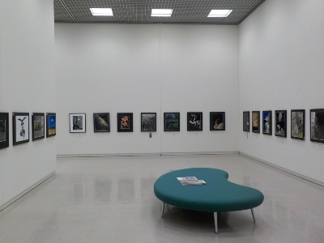
知人が出品してるとかないんでが、普通に見るのが楽しいので見に行きました。無料で色んな方の作品が見れるのはいいものです。
自分のまわりには芸術作品を作る人はいないのに、同じ県内にはこんな素晴らしい作品を作る人たちがいるんだと思うと、不思議な気持ちになりました。どこにいるんだろう？普段何してるんだろう？
島根県松江市袖師町1-5
2026/11/15

知人が出品してるとかないんでが、普通に見るのが楽しいので見に行きました。無料で色んな方の作品が見れるのはいいものです。
自分のまわりには芸術作品を作る人はいないのに、同じ県内にはこんな素晴らしい作品を作る人たちがいるんだと思うと、不思議な気持ちになりました。どこにいるんだろう？普段何してるんだろう？
2025/03/02
開館記念で無料だったので見に行きました。
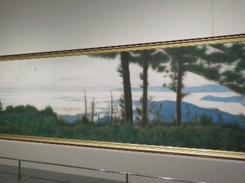
この絵は写真撮影OKだったので記念に撮りました。
色々な展示があり難しかったかな。
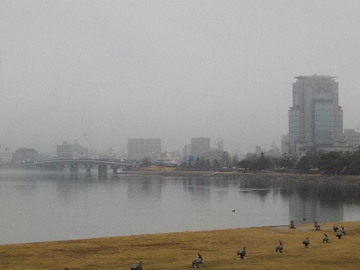
外は小雨だったんですが、いい雰囲気のある景色でした。
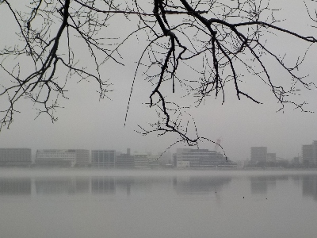
町が霧に包まれたような感じです。
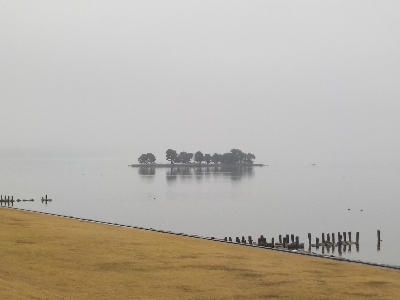
嫁が島が小さく見えました。なんか沈みそう。
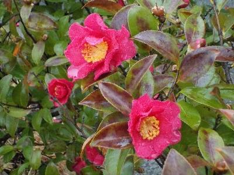
美術館の椿の生垣がキレイでした。
2024/11/23
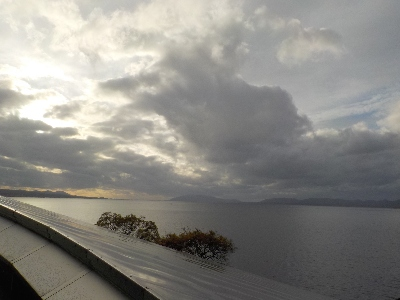
奈良原一高 ヴェネツィアの光と影を見に県立美術館に行きました。見たくて見に行っているので当然良かったです。
美術講座も受けて、いい時間を過ごせました。
島根県総合美術展がやっていたのでついでに見ました。期待していなかったですが、面白かったです。
楽しんで作品を作っているんだろうなと伝わってくるものが多くあり、なんか刺激があって良かったです。無料だし、機会があったら毎年見に行きたいと思いました。
2024/07/13
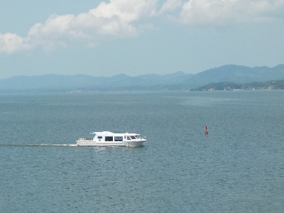
北斎コレクション第3期で、冨嶽三十六景 神奈川沖浪裏の展示があるので見に行きました。
天気も良かったのでいいレジャーになりました。
2024/03/03
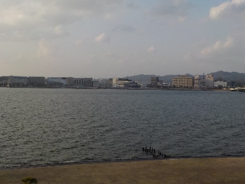
先週来たばっかりですが、無料なのでまた来ました。
企画展のTHE新版画 版元渡邊庄三郎の挑戦 常設展共に作品が多いので、何度見てもいいですね。
真ん中に新しい松江市役所がありますが、特に違和感がないです。上手く造られていますね。
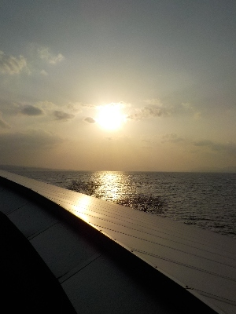
少し雲がかかっていますが、夕日が見れました。
ただの夕日なんですけどね。観光地で見ると特別な気分になります。
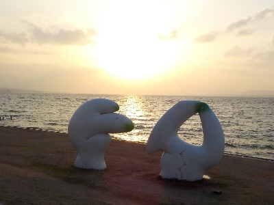
日の入り時間くらいには多くの人が集まっていました。
2024/02/24
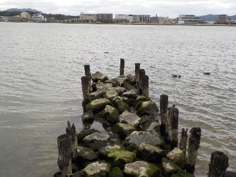
美術館で写真を見て、自分もあんな写真が撮れたらいいなと思いながら写真を撮りました。
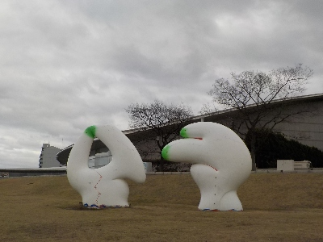
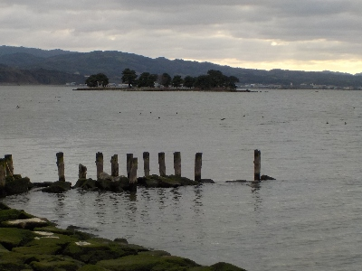
いい写真は私には撮れなかったです。
適当に思い出になる写真を今後も撮ろうと思います。